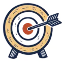
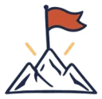
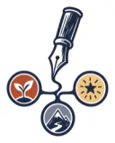
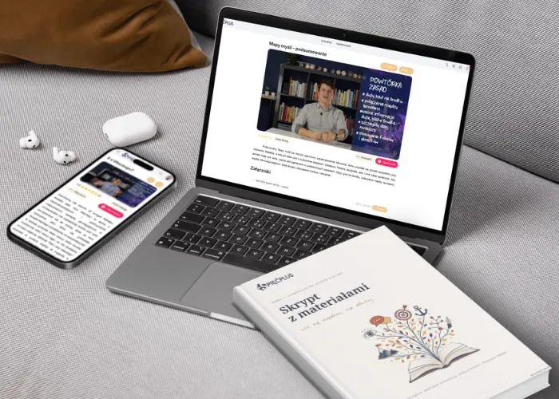
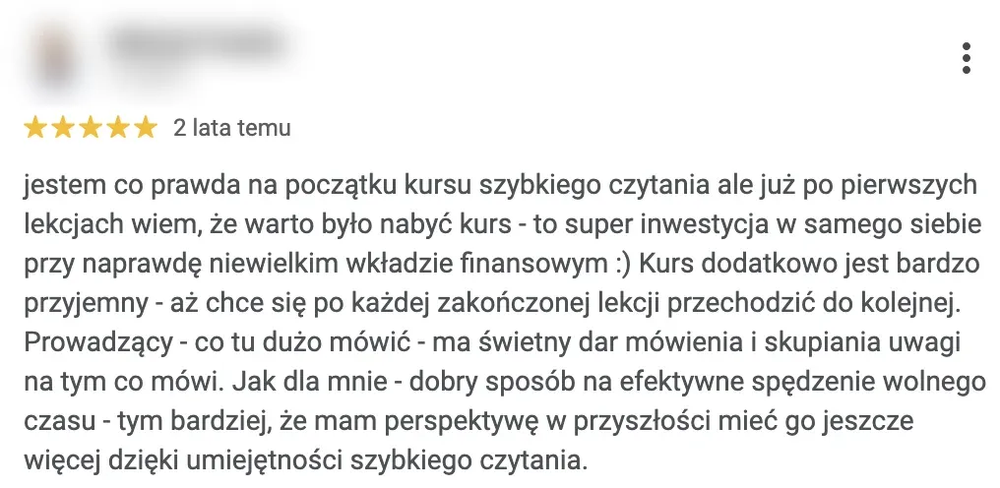
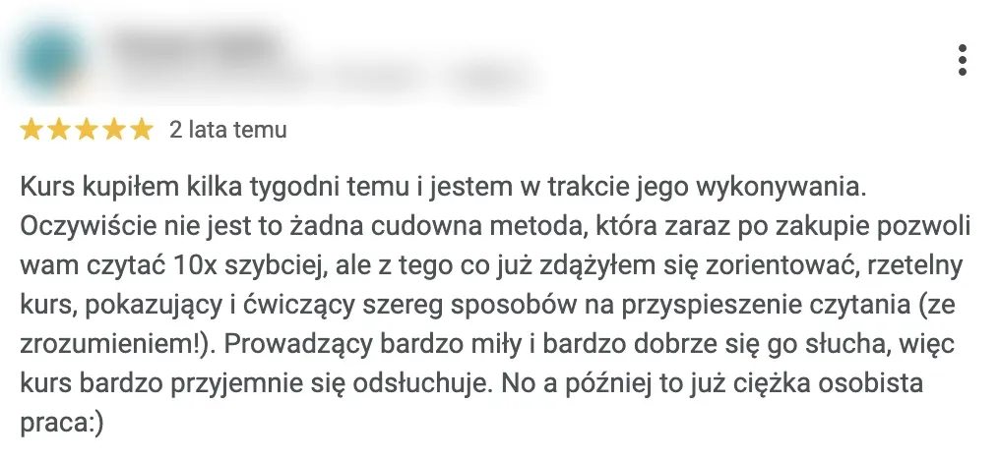

Kurs online dla uczniów od siódmej klasy do matury
Do siódmej klasy to działało.
Dziecko się nie zmieniło. Tym, co się zmieniło, jest ilość materiału.1
I to nie jest jego wina
500 zł · roczny dostęp · żelazna gwarancja 30 dni na zwrot
Samodzielny Uczeń Online to pakiet sześciu kursów, które poprowadzą Twoje dziecko od wymęczonego tematu szkoły do samodzielnego ogarniania swoich przedmiotów.
Na tej stronie znajdziesz odpowiedź na trzy pytania
Jaki jest ukryty problem ze szkołą?
Jest taki moment, który zna prawie każdy rodzic.
Na początku szkoły podstawowej jest dobrze. Dziecko przynosi dobre oceny, uczy się w zasadzie samo, nikt nie robi z tego tematu.
A potem, gdzieś koło siódmej klasy albo na początku liceum, wszystko zaczyna się sypać.
Pierwsza myśl jest zawsze ta sama. Przestał się starać. Druga - no cóż, taki wiek.
Po latach pracy w Fundacji wiem, że to coś zupełnie innego. Dziecko się nie zmieniło. Tym, co się zmieniło, jest ilość materiału.
Bo przez pierwsze lata szkoły w zupełności wystarczy czytać w kółko podręcznik. Materiału jest na tyle mało, że po dwukrotnym przeczytaniu zostaje w głowie sam z siebie. Bez żadnej metody.
I przy okazji dziecko uczy się wtedy czegoś jeszcze. Uczy się, że nauka to jest czytanie. Że wystarczy ślęczeć nad podręcznikiem wystarczająco długo.
To działa dokładnie do momentu, w którym materiału robi się za dużo. Wtedy czytanie w kółko przestaje działać praktycznie z dnia na dzień.
A uczeń robi dalej to samo, tylko dłużej i coraz bardziej się frustrując.
Sprawdzono to bardzo prostym badaniem. Dwie grupy dostały ten sam tekst.
Pierwsza czytała go kilka razy. Druga po pierwszym czytaniu odkładała kartkę i próbowała odtworzyć z pamięci to, co zapamiętała.
Osoby z drugiej grupy po tygodniu pamiętały więcej niż z pierwszej.4
I teraz najważniejsze. To ta gorsza grupa była z siebie bardziej zadowolona. Bo czytanie jest płynne i przyjemne, wszystko wygląda znajomo.
Odtwarzanie informacji z pamięci jest trudne i niekomfortowe, kiedy człowiek zacina się i czuje, że to, co przed chwilą przeczytał, przecieka mu przez palce.
Więc kiedy Twoje dziecko mówi, że się nauczyło, ono nie kłamie.
Ono naprawdę tak czuje. Po prostu sprawdziło to jedyną metodą, jaką zna.
Problem ze szkołą to tak naprawdę 3 spore problemy:

Z koncentracją.
Jak masz się skupić, kiedy jesteś pod ostrzałem informacji z każdej strony?
TikTok, gry na telefonie, powiadomienia, dźwięki, reklamy, alerty, stories, wiadomości, ciągle coś.
Jeśli Twoje dziecko nie nauczy się filtrować informacji, to… po prostu nie zrobi nic sensownego.
I to nie jest jego wina. To umiejętność skupienia się, której nikt go nie nauczył.

Z motywacją.
Przypomnij sobie, jak to było. Masz kilkanaście lat, trawa jest zielona, po szkole masz ocean czasu na wszystkie wspaniałe rzeczy.
Systematyczne uczenie się nie jest jedną z tych rzeczy, na które ma się wtedy ochotę.

Z kuciem.
Czytanie notatki po raz czwarty daje poczucie mocnego skupienia i nauki.4, 5
Wszystko wygląda znajomo, wszystko jest zrozumiałe, więc uczeń zamyka zeszyt z poczuciem, że umie.
Tylko że rozpoznawanie tekstu i zrozumienie i zapamiętanie go to dwie zupełnie różne bajki.
Na sprawdzianie nie ma notatki pod ręką, tylko pusta kartka.
Nie potrzebuje kolejnych korków, tylko zmiany tego, jak się uczy.
Na nauce Twoje dziecko spędzi od 12 do 17 lat.6
Dziecko musi nauczyć się tylko jednej rzeczy. Tego, jak się uczyć. Przyda mu się to w szkole podstawowej, liceum i na studiach.
Wyobraź sobie, że nie ma kursów i egzaminów na prawo jazdy. Każdy po prostu wsiada w samochód i próbuje nim jechać. To byłaby katastrofa.
A dokładnie tak każdy uczeń spędza 12 lat7 swojej obowiązkowej nauki. Musi się uczyć, chociaż nikt nie pokazał mu jak.
Czasem jakiś fajniejszy nauczyciel przemyci może coś o tym, jak należy się uczyć, ale to za mało.
Kiedy szkoła nie daje rady, rodzice próbują ratować się lekcjami dodatkowymi.
To jest błędne koło, które można przerwać.
Pakiet SUO jest skrótem: to 6 absolutnie niezbędnych umiejętności dla ucznia, których szkoła i korepetytor nie zdążyli pokazać.
Czy da się coś z tym zrobić?
Tak, i tym właśnie zajmujemy się w Fundacji Pięć Plus.
Twoje dziecko dostało we wrześniu plan lekcji na cały rok. Godzina po godzinie, wszystkie rozpisane co do minuty.
Nie dostaje jednak znacznie ważniejszej rzeczy: planu, jak się tego wszystkiego nauczyć.
Weźmy najprostszy przykład.
Sprawdzian we wtorek, więc uczeń siada w niedzielę wieczorem na dwie godziny i w poniedziałek na dwie.
We wtorek na sprawdzianie dostaje czwórkę i wszyscy są zadowoleni.
Ale w czerwcu, przy powtórce do egzaminu, okazuje się, że z tamtych czterech godzin nauki nie zostało prawie nic.
W 2006 roku zebrano wyniki ponad trzystu eksperymentów na temat skutecznego uczenia się i policzono to raz, a porządnie.8
Kilka godzin nauki rozbite na cały tydzień daje lepszy efekt niż zakuwanie przez jeden cały wieczór.
Bo Twoje dziecko nie musi uczyć się więcej. Nie musi jeszcze dłużej ślęczeć nad książkami.
Wystarczy ten sam czas nauki poukładać inaczej.
I planowanie nauki to nie jest wyjątek. Tak samo jest z resztą.
Z tym, jak uczeń robi notatki. Jak czyta. Jak z powrotem się skupia po tym, jak zerknął w telefon.
Jak siada do nauki w dniu, w którym mu się nie chce. Jak radzi sobie ze stresem przed egzaminem.
Do każdej z tych rzeczy można podejść lepiej lub gorzej. A większość uczniów robi to po prostu źle.
Nie dlatego, że im się nie chce. Dlatego, że nikt im nigdy nie pokazał, że można to zrobić inaczej.
Kurs to 6 konkretów
I właśnie dlatego kurs Samodzielny Uczeń Online podzieliliśmy na sześć części, które dotykają wszystkich zagadnień związanych z samodzielną nauką.
Motywacja, koncentracja, szybkie czytanie, notatki, nauka języków obcych i radzenie sobie ze stresem - do każdej z nich przygotowaliśmy też skrypt z ćwiczeniami, bo od samego oglądania filmów jeszcze nikt się niczego nie nauczył.
Kliknij konkret, aby dowiedzieć się więcej
1SkupienieUczenie się bez rozpraszaczy
Metoda budki telefonicznej jest jedną z naszych propozycji poskromienia smartfona. Ale to tylko wierzchołek góry lodowej.
W środku m.in.: budka telefoniczna, smartfon czarno-biały, Pomodoro, muzyka do nauki, Czapka czarodzieja, Myślodsiewnia, sen i drzemka.
2Motywacja
Przez odpowiednie ćwiczenia można ze zdolnego lenia zrobić samodzielnego ucznia.
W środku m.in.: 5× Dlaczego, Bucket List, 1-3-5, Dziennik sukcesów, Starter, krąg nawyku, zasada 2 dni.
3Szybkie czytanie
W środku m.in.: czytanie ze wskaźnikiem, pole widzenia, tablice Schulza, Alphabet game, metronom, kiedy nie czytać szybko.
4Notatki
Bez dobrych notatek nie da się zapamiętać informacji na długo ani szybko sobie ich przypomnieć.
Dlatego pokazujemy, jak notować, żeby nie tylko zapełnić zeszyt, ale przede wszystkim mieć powtórkę najważniejszej wiedzy zawsze pod ręką.
W środku m.in.: mapy myśli, notatki Cornella, notatki Feynmana, notatki cyfrowe.
5Języki obce
Z dużą chęcią przeprowadzę Twojego syna albo Twoją córkę przez sposoby na lepsze zapamiętywanie słówek, samodzielne ćwiczenie konwersacji, zeszyty słówek, środowisko językowe i całą resztę.
A, no i wytłumaczę też, dlaczego takie brzydkie, własnoręcznie nabazgrane fiszki są warte znacznie więcej od tych pięknych, kupnych kartoników ze sklepu.
W środku m.in.: krzywa zapominania, fiszki, zeszyt słówek, język w telefonie, podcasty, powtarzanie „na papugę”, alfabet fonetyczny.
6Stres
Wisienką na torcie są metody radzenia sobie ze stresem - niezbędne przy wszystkich sprawdzianach, wystąpieniach oraz egzaminach i maturach.
W środku m.in.: planowanie, przebodźcowanie, ćwiczenia oddechowe, poranne strony, trening Jacobsona.
Trzy poziomy: dla lepszych i słabszych uczniów
Każdy przedmiot w samodzielnym uczeniu ma trzy poziomy trudności, bo kurs ma być asystentem Twojego dziecka przez dłuższy czas.
Poziom zielony to łatwe do wdrożenia lifehacki, czyli sprytne sposoby na przeglądanie lektur czy skupienie na egzaminach.
Poziom pomarańczowy wymaga wykonania trudniejszych ćwiczeń.
Czerwony poziom wymaga najwięcej pracy.
Zastanawiasz się, czy Twoje dziecko ukończy nasz kurs?
Najważniejsze rzeczy uczniowie poznają podczas 5-minutowych filmów (montowanych na wzór filmików na YT).
Do każdej lekcji przygotowaliśmy ćwiczenia i notatki w skrypcie.
W ten sposób nowy sposób notowania czy uczenia się jest gotowy do użycia od razu po lekcji.
Wiedza odkłada się mimochodem, a umiejętności można od razu ćwiczyć w szkole - czyli zgodnie z najlepszymi technikami zapamiętywania.
I właśnie dzięki tym małym porcjom wiedzy, Twoje dziecko kroczek po kroczku opanuje samodzielne, skuteczne i sensowne uczenie się.
Ta samodzielność to dla Twojego dziecka wzięcie swoich szkolnych spraw w swoje ręce, poczucie sprawczości i po prostu radość z uczenia się.
I możesz oczywiście samodzielnie się tego nauczyć i spróbować przekazać to swojemu nastolatkowi… ale po pierwsze raczej nie znajdziesz na to czasu, a po drugie - nie czarujmy się - Twoje dziecko prawdopodobnie nie będzie chciało Cię słuchać.
Dlatego zrobiliśmy to za Ciebie. W przystępnej formie, krok po kroku i bez rewolucji.
No to masz pomóc, czy masz nie pomagać?
Możesz pomóc, ale tylko trochę, pokazać drogę, ale nie prowadzić za rękę.
Sprytny szlaban, marchewka zamiast kija. To już nie jest podejście: czytaj książkę przez dwie godziny za karę. To podejście menedżerskie: co możemy wspólnie zrobić z tym problemem?
Wychodzisz z propozycją kontraktu, który ustalacie wspólnie.
W zamian za to, że Ty rezygnujesz z tradycyjnej kary, Twój nastolatek obiecuje nie olać Twojej propozycji.
Jeśli wykona umówioną godzinę z kursem (może Ci pokazać wypełniony skrypt, wtedy będziesz wiedzieć, że naprawdę to zrobił), ma wolny cały dzień.
Rozrusznik, a nie silnik. To podejście jest potrzebne tylko na start - jak rozrusznik w samochodzie.
Dla kogo jest ten kurs?
Ten kurs jest dla Twojego dziecka, jeśli:
Nieważne, jakiego ma nauczyciela przedmiotowego, nieważne, z czego chce zdawać maturę rozszerzoną, nieważne, w co celuje, nieważne, czy jest zdolny i chce mieć więcej czasu, nieważne, czy ma trudności z nauką i te metody pozwolą mu nie spędzać całych popołudniów nad książkami, tylko po prostu to sobie ogarnąć.
Widziałem zarówno słabszych uczniów, którzy zaczynali uczyć się dobrze, jak i świetne uczennice, które zyskiwały czas dla siebie, pozostając w czołówce szkolnej.
Dla słabszego ucznia mamy dedykowaną ścieżkę, która jest krótsza (same zielone lekcje).
Dolną granicą wiekową jest siódma klasa, górna to zwyczajowo maturzyści przygotowujący się na akademickie wyzwania.
Nie zastąpi specjalisty. Ze względu na formę wszystkie nasze techniki są proste i nie dotykają głębokich problemów.
Sposoby na stres nie zastąpią spotkania ze specjalistą i terapii.
Piotr Starzyński, autor kursu
Dlaczego mi tego nikt wcześniej nie pokazał?

Pierwszy raz o efektywnej nauce usłyszałem na kursie szybkiego czytania. To było w pierwszej klasie liceum.
Dostałem się do dość wymagającej szkoły i po prostu bałem się, jak to będzie.
No i porządnie się wkurzyłem, bo w głowie od tamtej pory świeciła mi się tylko jedna pretensja: dlaczego mi tego nikt wcześniej nie pokazał?
Z tego pytania narodziły się korki z efektywnej nauki, Fundacja Pięć Plus i w końcu ten kurs, który sprawia, że nauka jest lekka, łatwa, przyjemna i przede wszystkim sensowna.
Wiem, że w szkole dają po prostu za mało Twojemu dziecku, za mało pasji, za mało serca.
Wiem, bo zacząłem od badania strajku nauczycieli, a potem się tak zaangażowałem, że zrobiłem uprawnienia nauczycielskie i sam zostałem nauczycielem, bo chciałem sprawdzić, czy da się coś zmienić.
I odbiłem się od papierologii zamiast uczenia, od przeładowanych klas, od słabych warunków, od niedziałających rzutników.
I żeby nie było, nie winię nauczycieli. Byłem nauczycielem, przerąbane mają nauczyciele.
Ale nie można od nich oczekiwać nie wiadomo czego w tych warunkach.
Nasze doświadczenia zaczynaliśmy od prowadzenia kursów stacjonarnych w niewielkich grupach.
To doskonała metoda szkolenia, ale ma jedną wielką wadę.
W ten sposób możesz przeszkolić tylko kilkadziesiąt osób miesięcznie.
Poza tym, żeby się u nas uczyć, trzeba było mieć pieniądze i trzeba było mieszkać w Warszawie. Więc no kolejne bariery nie do przeskoczenia.
I w związku z tym ja doszedłem do wniosku, że jedyną opcją to jest zrobienie tego online.
I zrobiliśmy to online. Zrobiliśmy ogromny projekt własnymi siłami, własnymi zasobami.
I teraz go udostępniam.
Udostępniam go wszystkim tym rodzicom, którzy chcą dać swoim dzieciom narzędzia do tego, żeby się skutecznie uczyć.
Fundacja jest laureatem plebiscytu Orły Edukacji 2025 i 2026 (profil: 68 ocen, średnio 5,0 na 5, skan Orłów z 3.01.2026).
Koszt zakupu… i jego braku
Ile kosztuje kurs Samodzielny Uczeń Online i co tracisz, nie decydując się na niego
Korepetycje czy kurs?
Więc jeśli takie są warunki w szkole, to jak Twoje dziecko ma się uczyć? No, z Tobą.
Więc spiny, wkurzanie się i Twój czas, który moglibyście poświęcić wspólnie na coś innego, na coś fajniejszego, bo dziecko nie pomaga Ci w pracy, bo praca to jest Twoja sprawa.
Więc wzajemna frustracja i zabieranie dziecku sprawczości z dobrego serca.
No to korki. No to jest po prostu zapłacenie pieniędzmi, żeby ktoś inny nad tym siedział.
Nie ma sprawczości. A Twoje dziecko będzie musiało sobie umieć poradzić.
500 zł za pakiet 6 kursów. Cały pakiet kosztuje mniej niż osiem godzin korepetycji z matematyki w liceum i niecałe dziesięć w szkole podstawowej.9
Pakiet Samodzielny Uczeń Online

Skrypt to plik PDF do samodzielnego wydruku.
500 zł6 kursów · roczny dostęp
Kupując pakiet otrzymujesz:
- 6 kursów wideo: skupienie, motywacja, notatki, stres, szybkie czytanie, języki
- krótkie lekcje wideo z ćwiczeniem i podsumowaniem
- skrypt PDF do druku, 177 stron
- 3 poziomy: zielony, pomarańczowy, czerwony, dopasowane zarówno do lepszych, jak i słabszych uczniów
- roczny dostęp od zakupu, przedłużenie za 50 zł
Płatność online przez Paynow. Wystawiamy faktury.
Żelazna gwarancja 30 dni na zwrot
Ty piszesz maila, a ja zwracam pieniądze.
100% zwrotu bez zbędnych pytań.
Nie trzeba niczego oglądać ani kończyć. Mail wystarczy: kontakt@5plus.edu.pl
30 dni liczymy od dnia zakupu. Gwarancja nie ogranicza ustawowego prawa odstąpienia od umowy ani uprawnień z tytułu niezgodności treści cyfrowej z umową.
Macie trudności finansowe?
Napisz maila, zawsze coś wymyślę, żeby Twoje dziecko mogło skorzystać z kursu.
Instytucje takie jak dom dziecka mogą liczyć na bezpłatną pulę kursów dla swoich podopiecznych.
Piotr Starzyński
Opinie o kursach szybkiego czytania Fundacji Pięć Plus
Z naszego profilu w Google. Nie sprawdzamy, czy autor opinii kupił kurs.
„Kurs dodatkowo jest bardzo przyjemny - aż chce się po każdej zakończonej lekcji przechodzić do kolejnej.”

„Prowadzący bardzo miły i bardzo dobrze się go słucha, więc kurs bardzo przyjemnie się odsłuchuje.”

Masz pytanie? Może mamy odpowiedź.
A jak nie usiądzie?
Ten kurs to nie jest kobyła. Ja zrobiłem z tego maksymalnie 5-minutowe, króciusieńkie lekcje w stylu filmików na YouTubie.
Jak ustawić start: „No to masz pomóc, czy masz nie pomagać?”
Czy kurs sprawdzi się przy ADHD?
Kurs Samodzielny Uczeń to skrzynka z narzędziami do sensownej nauki.
Kurs nie zastąpi specjalisty: więcej w części „Dla kogo jest ten kurs?”.
Na YouTube jest mnóstwo filmów o nauce. Czym to się różni?
Nie łudź się, że jeden filmik na YouTubie od coacha sukcesu albo kanał o nauce na TikToku załatwią sprawę. Wyrzuciliśmy teorię, zostawiliśmy praktykę.
Czy mogę kupić jeden moduł?
Można, jeden moduł kosztuje 300 zł. Pakiet sześciu modułów kosztuje 500 zł.
Masz inne pytanie? Napisz na kontakt@5plus.edu.pl.
Jeszcze to czytasz?
Nieważne, czy na Twoje dziecko czeka egzamin ósmoklasisty, matura czy trudne studia - metody sensownej nauki będą mu pomagać przez całe życie.
Mnie tego nikt wcześniej nie pokazał. Na szczęście dla Twojego dziecka jesteś Ty.
I właśnie Ty możesz pomóc Twojemu dziecku uczyć się z sensem. Najprościej - pokazując mu nasz kurs.
Twoje dziecko i tak będzie się uczyć codziennie przez najbliższych kilka lat.
Pytanie tylko, czy nauka będzie męką czy przygodą.
Wybierasz drugą opcję?
Płatność online przez Paynow. Wystawiamy faktury.
Przypisy
- Doświadczenie z pracy Fundacji. Tak samo opisują to rodzice: „Klasa 7 i 8 to hardcore, nie jeśli chodzi o trudność materiału tylko ilość.” (rodzic ucznia, Reddit, r/Nauka_Uczelnia, 15.01.2024). Dlaczego czytanie w kółko jest słabą metodą: przypisy 4 i 5. ↑
- Lekcje oznaczone na zielono: koncentracja 9, motywacja 7, notatki 11, stres 8, szybkie czytanie 36, języki 17. ↑
- Skrypt w wersji 2026. ↑
- Roediger, Karpicke 2006, „Test-enhanced learning”, „Psychological Science” 17(3), 249-255: po pięciu minutach lepiej wypadało ponowne czytanie, po dwóch dniach i po tygodniu odtwarzanie z pamięci; czytający byli przy tym pewniejsi, że zapamiętali. ↑
- Dunlosky i in. 2013, „Psychological Science in the Public Interest” 14(1), 4-58: z dziesięciu technik uczenia się ponowne czytanie i podkreślanie mają niską użyteczność, a sprawdzanie się i rozłożone powtórki wysoką. ↑
- 8 lat szkoły podstawowej i 4 lata liceum to 12 lat, z pięcioletnimi studiami 17. ↑
- Obowiązkowe roczne przygotowanie przedszkolne, 8 lat szkoły podstawowej i obowiązek nauki do 18. roku życia (Prawo oświatowe, art. 31 ust. 4 i art. 35). ↑
- Cepeda, Pashler, Vul, Wixted, Rohrer 2006, „Distributed practice in verbal recall tasks”, „Psychological Bulletin” 132(3), 354-380: metaanaliza 839 porównań z 317 eksperymentów (184 publikacje). Ten sam łączny czas nauki rozłożony na kilka sesji daje lepsze zapamiętanie na teście odroczonym niż nauka jednym ciągiem. Zadania: odtwarzanie materiału słownego (słówka, fakty, listy). ↑
- e-korepetycje.net, „Ceny korepetycji 2026”, 140 648 ogłoszeń: matematyka w liceum i do matury 66 zł za godzinę (500 / 66 = 7,6 h), w szkole podstawowej i do E8 53 zł (500 / 53 = 9,4 h). ↑